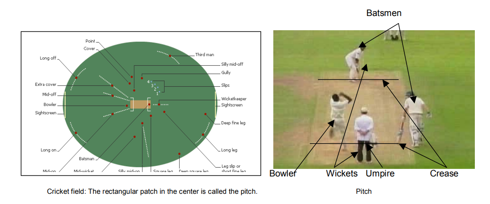
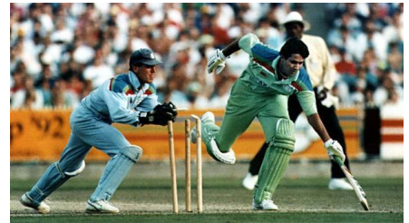

CRICKRT

A typical Cricket game has 11 players in each team. It is fundamentally very similar
to baseball. It is played with a bat and a ball. The center of the field is a rectangular area of
22 meters called a pitch. In cricket there are only two bases (called creases) on either ends
of the pitch. Three wooden sticks called wickets or stumps are placed inside each crease.
A batsman stands on the pitch in front of the wickets in one crease, and tries to hit the ball
that a bowler (pitcher) throws towards him. His partner stands in the other crease waiting
for his turn. Aim of the batsman is to hit the ball to make as many runs (points) as he can,
while the aim of the bowler is to get the batsman out while giving away the least runs
possible.
There are several types of cricket games, but we would talk about one-day game in
this discussion. It is around 6 hour long game. It has two sessions, the team which bats first
tries to put up a high score. The team batting second has to beat that score to win the
game. Each team has 50 overs (6 balls make up 1 over), i.e. 300 balls delivered to them to
score from. All the players in the team bat until either they are all out, or they run out of
balls to score from. Each bowler can bowl only 1 over at a time and not more than 10 overs
in the whole game. So, in a typical game 5-7 players bowl. There are two batsmen on the
field at all times. The bowling team players occupy the rest of the field to stop the ball, in
order to keep the batting team from scoring runs

Common ways to score runs:
1,2 or 3 runs: After hitting the ball when the batsmen run from their crease to the other one
, it counts as 1 run. The batsmen need to land their bat inside the crease to complete the
run, if a fielder hits the wickets (stumps) with the ball before a batsman can land his bat, the
batsman gets out. So, the batsmen can score multiple runs by running multiple times as
long as they do not get out.
6 runs: If a ball is hit out of the ground without any bounce inside the field then it is 6 runs.
4 runs: If the ball is hit out of the ground with at least once bounce then it is 4 runs (also
called a boundary).
Wide ball: If a ball is delivered too wide of the batsman it is called a wide ball and a run is
added to the score of the batting team and the bowler has to bowl again.
No-ball: If the foot of the batsman crosses the crease before he delivers the ball it is called
a no-ball, and a run is added to the score of the batting team and the bowler has to bowl
again.
Common ways to get out:
Bold: If a batsman misses the ball being delivered to him, and it hits the wickets (stumps)
then the batsman is out.
Leg before wicket (LBW): If the ball hits the batsmanís leg and it would have hit the
stumps if it had not been obstructed by his leg.
Caught: If a batsman hits the ball, and a fielder or a bowler catches it while it is still in the
air.
Runout: While running between the wickets if the bat